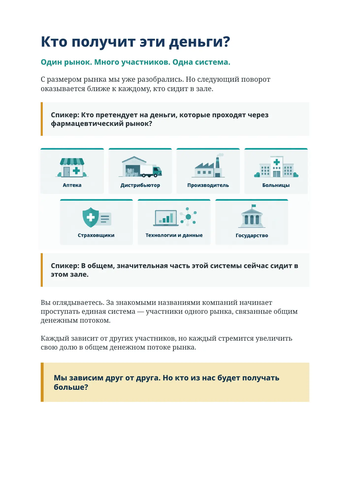
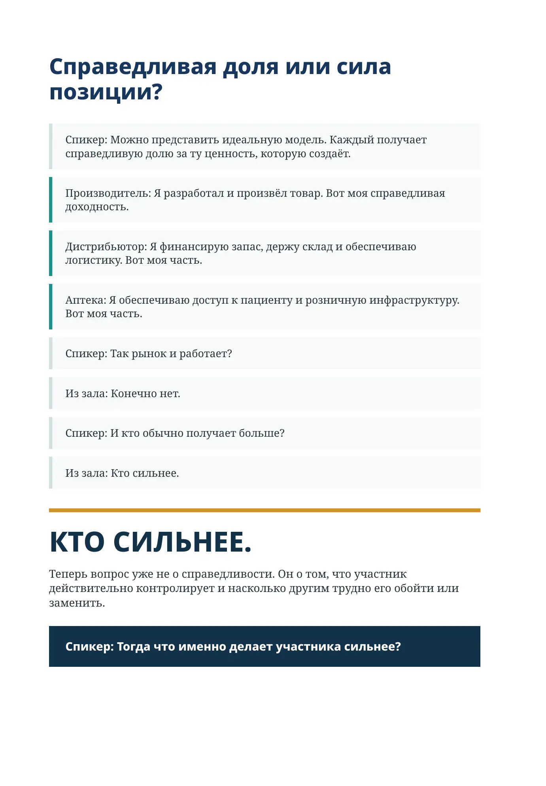
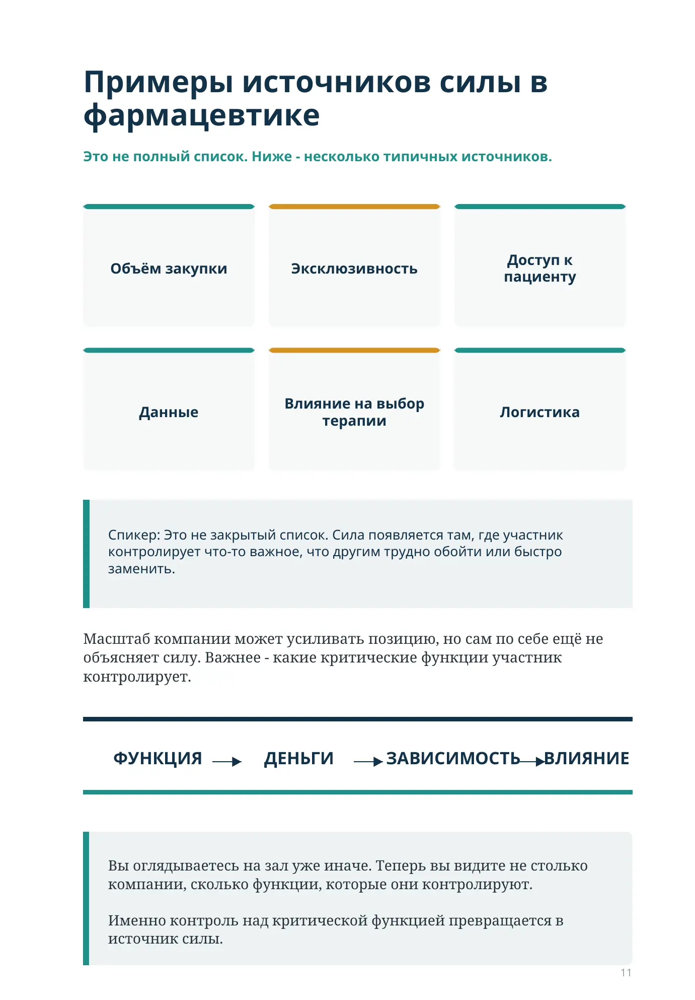
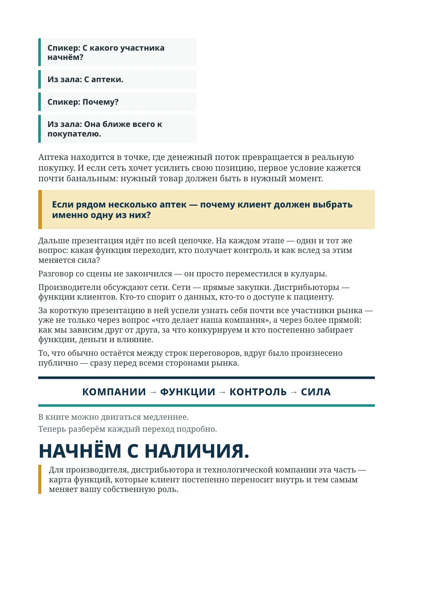
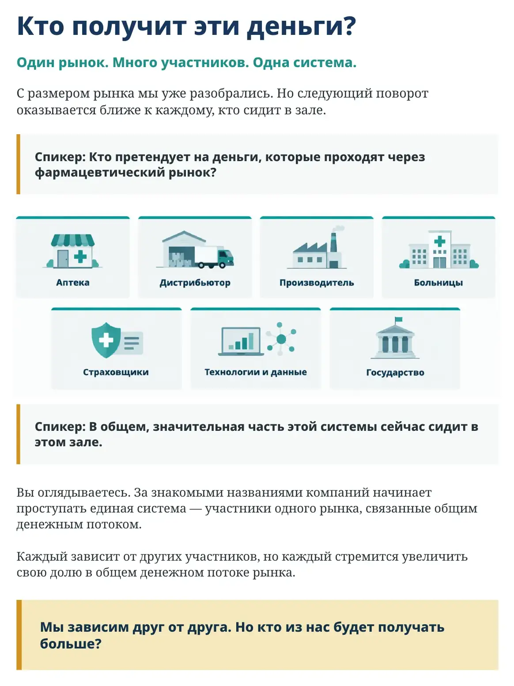
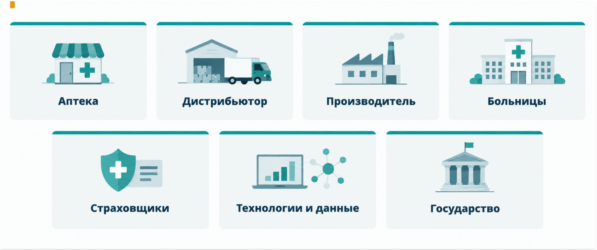
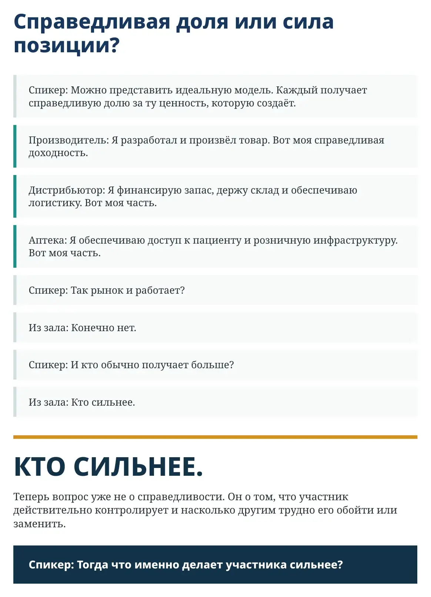

Как фармацевтическая семья делит деньги?

Кто получит эти деньги?
Один рынок. Много участников. Одна система.
С размером рынка мы уже разобрались. Но следующий поворот оказывается ближе к каждому, кто сидит в зале.
Спикер: Кто претендует на деньги, которые проходят через фармацевтический рынок?

Аптеки
Дистрибьюторы
Производители
Страховщики
Больницы
Технологии и данные
Государство
Спикер: В общем, значительная часть этой системы сейчас сидит в этом зале.
Вы оглядываетесь. За знакомыми названиями компаний начинает проступать единая система — участники одного рынка, связанные общим денежным потоком.
Каждый зависит от других участников, но каждый стремится увеличить свою долю в общем денежном потоке рынка.
Мы зависим друг от друга. Но кто из нас будет получать больше?

Справедливая доля или сила позиции?
Спикер: Можно представить идеальную модель. Каждый получает справедливую долю за ту ценность, которую создаёт.
Производитель: Я разработал и произвёл товар. Вот моя справедливая доходность.
Дистрибьютор: Я финансирую запас, держу склад и обеспечиваю логистику. Вот моя часть.
Аптека: Я обеспечиваю доступ к пациенту и розничную инфраструктуру. Вот моя часть.
Спикер: Так рынок и работает?
Из зала: Конечно нет.
Спикер: И кто обычно получает больше?
Из зала: Кто сильнее.
КТО СИЛЬНЕЕ.
Теперь вопрос уже не о справедливости. Он о том, что участник действительно контролирует и насколько другим трудно его обойти или заменить.
Спикер: Тогда что именно делает участника сильнее?
Примеры источников силы в фармацевтике
Это не полный список. Ниже — несколько типичных источников.
Объём закупки
Эксклюзивность
Доступ к пациенту
Данные
Влияние на выбор терапии
Логистика
Спикер: Это не закрытый список. Сила появляется там, где участник контролирует что-то важное, что другим трудно обойти или быстро заменить.
Масштаб компании может усиливать позицию, но сам по себе ещё не объясняет силу. Важнее — какие критические функции участник контролирует.
ФУНКЦИЯ → ДЕНЬГИ → ЗАВИСИМОСТЬ → ВЛИЯНИЕ
Вы оглядываетесь на зал уже иначе. Теперь вы видите не столько компании, сколько функции, которые они контролируют.
Именно контроль над критической функцией превращается в источник силы.
Спикер: С какого участника начнём?
Из зала: С аптеки.
Спикер: Почему?
Из зала: Она ближе всего к покупателю.
Аптека находится в точке, где денежный поток превращается в реальную покупку. И если сеть хочет усилить свою позицию, первое условие кажется почти банальным: нужный товар должен быть в нужный момент.
Если рядом несколько аптек — почему клиент должен выбрать именно одну из них?
Дальше презентация идёт по всей цепочке. На каждом этапе — один и тот же вопрос: какая функция переходит, кто получает контроль и как вслед за этим меняется сила?
Разговор со сцены не закончился — он просто переместился в кулуары.
Производители обсуждают сети. Сети — прямые закупки. Дистрибьюторы — функции клиентов. Кто-то спорит о данных, кто-то о доступе к пациенту.
За короткую презентацию в ней успели узнать себя почти все участники рынка — уже не только через вопрос «что делает наша компания», а через более прямой: как мы зависим друг от друга, за что конкурируем и кто постепенно забирает функции, деньги и влияние.
То, что обычно остаётся между строк переговоров, вдруг было произнесено публично — сразу перед всеми сторонами рынка.
КОМПАНИИ → ФУНКЦИИ → КОНТРОЛЬ → СИЛА
В книге можно двигаться медленнее.
Теперь разберём каждый переход подробно.
НАЧНЁМ С НАЛИЧИЯ.
Для производителя, дистрибьютора и технологической компании эта часть — карта функций, которые клиент постепенно переносит внутрь и тем самым меняет вашу собственную роль.